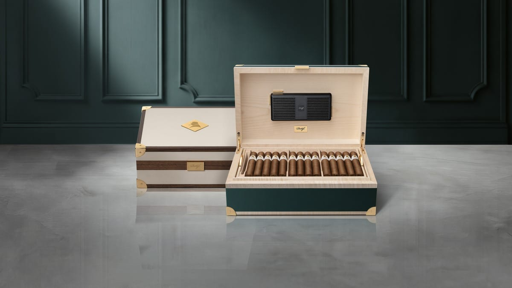

Limited Edition · Dominican Republic
Davidoff Announces Two Limited Winston Churchill Traveller Humidors, 100 Pieces Each, on Sale December 1
Davidoff has announced two limited Winston Churchill Traveller humidors. The Ambassador is $4,950 and the Primus $4,350; each is limited to 100 numbered pieces, and both go on sale on December 1.